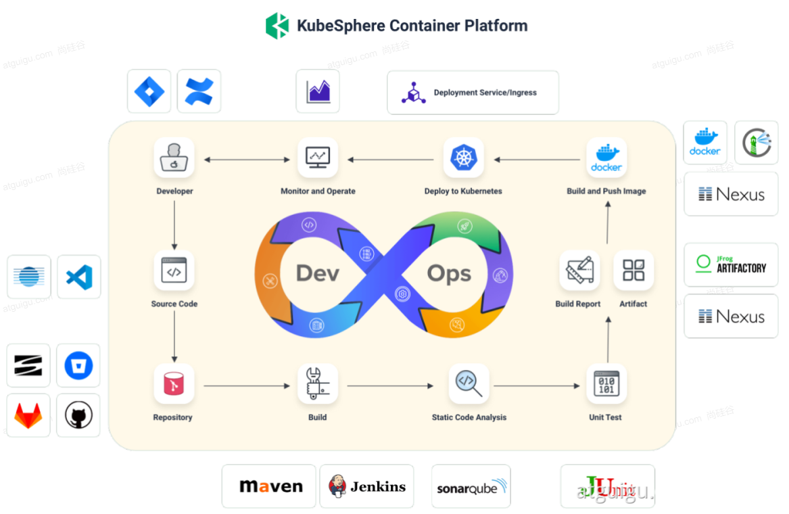

<!DOCTYPE html>


<html lang="zh-Hans">
  

    <head>
      <meta charset="utf-8" />
        
      <meta name="description" content="Technical output and problem solving record" />
      
      <meta
        name="viewport"
        content="width=device-width, initial-scale=1, maximum-scale=1"
      />
      <title>云原生07--DevOps使用 |  Tunan`s Blog</title>
  <meta name="generator" content="hexo-theme-ayer">
      
      <link rel="shortcut icon" href="/favicon.ico" />
       
<link rel="stylesheet" href="/dist/main.css">

      <link
        rel="stylesheet"
        href="https://cdn.jsdelivr.net/gh/Shen-Yu/cdn/css/remixicon.min.css"
      />
      
<link rel="stylesheet" href="/css/custom.css">
 
      <script src="https://cdn.jsdelivr.net/npm/pace-js@1.0.2/pace.min.js"></script>
       
 

      <link
        rel="stylesheet"
        href="https://cdn.jsdelivr.net/npm/@sweetalert2/theme-bulma@5.0.1/bulma.min.css"
      />
      <script src="https://cdn.jsdelivr.net/npm/sweetalert2@11.0.19/dist/sweetalert2.min.js"></script>

      <!-- mermaid -->
      
      <style>
        .swal2-styled.swal2-confirm {
          font-size: 1.6rem;
        }
      </style>
    </head>
  </html>
</html>


<body>
  <div id="app">
    
      
    <main class="content on">
      <section class="outer">
  <article
  id="post-07云原生-DevOps使用"
  class="article article-type-post"
  itemscope
  itemprop="blogPost"
  data-scroll-reveal
>
  <div class="article-inner">
    
    <header class="article-header">
       
<h1 class="article-title sea-center" style="border-left:0" itemprop="name">
  云原生07--DevOps使用
</h1>
 

      
    </header>
     
    <div class="article-meta">
      <a href="/2022/07/02/07%E4%BA%91%E5%8E%9F%E7%94%9F-DevOps%E4%BD%BF%E7%94%A8/" class="article-date">
  <time datetime="2022-07-02T07:32:54.000Z" itemprop="datePublished">2022-07-02</time>
</a> 
  <div class="article-category">
    <a class="article-category-link" href="/categories/%E4%BA%91%E5%8E%9F%E7%94%9F/">云原生</a>
  </div>
  
<div class="word_count">
    <span class="post-time">
        <span class="post-meta-item-icon">
            <i class="ri-quill-pen-line"></i>
            <span class="post-meta-item-text"> Word count:</span>
            <span class="post-count">1k</span>
        </span>
    </span>

    <span class="post-time">
        &nbsp; | &nbsp;
        <span class="post-meta-item-icon">
            <i class="ri-book-open-line"></i>
            <span class="post-meta-item-text"> Reading time≈</span>
            <span class="post-count">4 min</span>
        </span>
    </span>
</div>
 
    </div>
      
    <div class="tocbot"></div>


  
    <div class="article-entry" itemprop="articleBody">
       
  <h1 id="DevOps基础与实战"><a href="#DevOps基础与实战" class="headerlink" title="DevOps基础与实战"></a>DevOps基础与实战</h1><h2 id="DevOps基础"><a href="#DevOps基础" class="headerlink" title="DevOps基础"></a>DevOps基础</h2><p>DevOps <strong>是一系列做法和工具</strong>，可以使 IT 和软件开发团队之间的<strong>流程实现自动化</strong>。其中，随着敏捷软件开发日趋流行，<strong>持续集成 (CI)</strong> 和<strong>持续交付 (CD)</strong> 已经成为该领域一个理想的解决方案。<span id="more"></span>在 CI/CD 工作流中，每次集成都通过自动化构建来验证，包括编码、发布和测试，从而帮助开发者提前发现集成错误，团队也可以快速、安全、可靠地将内部软件交付到生产环境。</p>
<p></p>
<p></p>
<h2 id="尚医通项目上云"><a href="#尚医通项目上云" class="headerlink" title="尚医通项目上云"></a>尚医通项目上云</h2><h3 id="1、项目介绍"><a href="#1、项目介绍" class="headerlink" title="1、项目介绍"></a>1、项目介绍</h3><p>架构图如下</p>
<p></p>
<p>目录结构如下</p>
<pre><code>yygh-parent
|---common                                  //通用模块
|---hospital-manage                         //医院后台                [9999]   
|---model                                                                        //数据模型
|---server-gateway                                                    //网关                    [80]
|---service                                                                    //微服务层
|-------service-cmn                                                    //公共服务                [8202]
|-------service-hosp                                                //医院数据服务        [8201]
|-------service-order                                                //预约下单服务        [8206]
|-------service-oss                                                    //对象存储服务        [8205]
|-------service-sms                                                    //短信服务                [8204]
|-------service-statistics                                    //统计服务                [8208]
|-------service-task                                                //定时服务                [8207]
|-------service-user                                                //会员服务                [8203]


====================================================================

yygh-admin                                                                    //医院管理后台        [9528]
yygh-site                                                                        //挂号平台                [3000]
</code></pre>
<h3 id="2、中间件"><a href="#2、中间件" class="headerlink" title="2、中间件"></a>2、中间件</h3><table>
<thead>
<tr>
<th>中间件</th>
<th>集群内地址</th>
<th>外部访问地址</th>
</tr>
</thead>
<tbody><tr>
<td>Nacos</td>
<td>his-nacos.his:8848</td>
<td><a target="_blank" rel="noopener" href="http://139.198.165.238/">http://139.198.165.238:30349/</a>nacos</td>
</tr>
<tr>
<td>MySQL</td>
<td>his-mysql.his:3306</td>
<td><a target="_blank" rel="noopener" href="http://139.198.165.238/">139.198.165.238</a>:31840</td>
</tr>
<tr>
<td>Redis</td>
<td>his-redis.his:6379</td>
<td><a target="_blank" rel="noopener" href="http://139.198.165.238/">139.198.165.238</a>:31968</td>
</tr>
<tr>
<td>Sentinel</td>
<td>his-sentinel.his:8080</td>
<td><a target="_blank" rel="noopener" href="http://139.198.165.238:31523/">http://139.198.165.238:31523/</a></td>
</tr>
<tr>
<td>MongoDB</td>
<td>mongodb.his:<strong>27017</strong></td>
<td><a target="_blank" rel="noopener" href="http://139.198.165.238/">139.198.165.238</a><strong>:32693</strong></td>
</tr>
<tr>
<td>RabbitMQ</td>
<td>rabbitm-yp1tx4-rabbitmq.his:5672</td>
<td><a target="_blank" rel="noopener" href="http://139.198.165.238/">139.198.165.238</a>:30375</td>
</tr>
<tr>
<td>ElasticSearch</td>
<td>his-es.his:9200</td>
<td><a target="_blank" rel="noopener" href="http://139.198.165.238/">139.198.165.238</a>:31300</td>
</tr>
</tbody></table>
<h3 id="3、在Nacos中添加生产环境配置"><a href="#3、在Nacos中添加生产环境配置" class="headerlink" title="3、在Nacos中添加生产环境配置"></a>3、在Nacos中添加生产环境配置</h3><p>每一个微服务都要添加，下面以cmn微服务为例</p>
<p></p>
<p>其中Yaml是开发环境中</p>
<p></p>
<p>将所有访问地址改为集群内访问地址，比如Redis、Mysql，还有负责流量管控的sentinel等</p>
<p>其他微服务也是如此操作</p>
<h3 id="4、创建DevOps工程"><a href="#4、创建DevOps工程" class="headerlink" title="4、创建DevOps工程"></a>4、创建DevOps工程</h3><p>进入dev-zhao上级pm-wang的kubesphere账户，创建DevOps工程</p>
<p></p>
<p>然后在工程管理中邀请dev-zhao作为管理员，方便后续流水线的操作</p>
<p>创建流水线</p>
<p></p>
<p>选择流水线模板</p>
<p></p>
<p></p>
<p>点击编辑Jenkinsfile，复制出平台已经编辑好的文件内容</p>
<p>在yygh-parent根目录下创建Jenkinsfile流水线文件，粘贴进去即可（省去自己编写的过程）</p>
<h2 id="可视化pipeline"><a href="#可视化pipeline" class="headerlink" title="可视化pipeline"></a>可视化pipeline</h2><h3 id="1、拉取代码"><a href="#1、拉取代码" class="headerlink" title="1、拉取代码"></a>1、拉取代码</h3><p>编辑流水线，clone  code，选择自己的项目仓库，以及选择分支是master还是release</p>
<p></p>
<p>后续可以添加一个shell命令 ls -al</p>
<p>来打印我们的拉取内容。</p>
<h3 id="2、项目编译"><a href="#2、项目编译" class="headerlink" title="2、项目编译"></a>2、项目编译</h3><p>首先还是执行shell命令查看编译的是什么项目 ls -al</p>
<p>然后添加shell命令</p>
<p></p>
<p>进行编译打包</p>
<h4 id="修改maven阿里云镜像"><a href="#修改maven阿里云镜像" class="headerlink" title="修改maven阿里云镜像"></a>修改maven阿里云镜像</h4><p>这里编译打包速度很慢是因为使用的maven官方镜像，所以我们需要更改配置，改成阿里云镜像</p>
<ol>
<li>使用admin登录ks</li>
<li>进入集群管理</li>
<li>进入配置中心</li>
<li>找到配置 ks-devops-agent</li>
<li>修改配置，加入阿里云镜像</li>
</ol>
<h4 id="缓存机制"><a href="#缓存机制" class="headerlink" title="缓存机制"></a>缓存机制</h4><p>已经下载过的jar包，下一次流水线的启动，不会重复下载</p>
<h3 id="3、构建镜像"><a href="#3、构建镜像" class="headerlink" title="3、构建镜像"></a>3、构建镜像</h3><p>打包命令</p>
<p></p>
<p>添加并行</p>
<p>构建其他镜像</p>
<p></p>
<h3 id="4、推送镜像"><a href="#4、推送镜像" class="headerlink" title="4、推送镜像"></a>4、推送镜像</h3><p>在Jenkinsfile中修改</p>
<p></p>
<p>构建推送镜像</p>
<p></p>
<p>添加凭证</p>
<p></p>
<p>最后的流程是</p>
<p></p>
<p>注意最后也是并行推送的。</p>
<h3 id="5、部署到dev环境"><a href="#5、部署到dev环境" class="headerlink" title="5、部署到dev环境"></a>5、部署到dev环境</h3><p></p>
<h3 id="6、前端测试"><a href="#6、前端测试" class="headerlink" title="6、前端测试"></a>6、前端测试</h3><p></p>
<p>在前端中修改BASE_API</p>
<p></p>
<p>启动前端后，</p>
<p>数据成功从云上的服务加载</p>
<p></p>
<h2 id="前端项目"><a href="#前端项目" class="headerlink" title="前端项目"></a>前端项目</h2><h3 id="1、yygh-admin"><a href="#1、yygh-admin" class="headerlink" title="1、yygh-admin"></a>1、yygh-admin</h3><ul>
<li><code>npm run build</code> 会生成<code>dist</code>目录，放到nginx的html下，即可运行</li>
</ul>
<h3 id="2、yygh-site"><a href="#2、yygh-site" class="headerlink" title="2、yygh-site"></a>2、yygh-site</h3><ul>
<li><p><code>npm install --registry=https://registry.npm.taobao.org </code> 安装项目依赖</p>
</li>
<li><p><code>npm run build</code> 对项目打包，</p>
</li>
<li><p>打包完成后把 <code>.nuxt ,static, nuxt.config.js, package.json </code> 这四个关键文件复制到 <code>node </code>环境。先<code>npm install</code>再使用<code>npm run start</code> 即可运行</p>
</li>
<li></li>
</ul>
<h2 id="webhook"><a href="#webhook" class="headerlink" title="webhook"></a>webhook</h2><ul>
<li><p>1、每个项目，都有流水线文件</p>
</li>
<li><p>2、每次修改完项目，手动点击运行</p>
</li>
<li><p>3、希望，每次修改完项目，代码推送，流水线能自动运行</p>
</li>
<li><ul>
<li>写代码并提交——&gt; gitee ———&gt; 给指定的地方发请求（webhook）——&gt; kubesphere平台感知到 —–&gt; 自动启动流水线继续运行</li>
<li><a target="_blank" rel="noopener" href="http://139.198.165.238:30880/devops_webhook/git/?url=https://gitee.com/leifengyang/yygh-admin.git">http://139.198.165.238:30880/devops_webhook/git/?url=https://gitee.com/leifengyang/yygh-admin.git</a></li>
</ul>
</li>
</ul>
 
      <!-- reward -->
      
    </div>
    

    <!-- copyright -->
    
    <div class="declare">
      <ul class="post-copyright">
        <li>
          <i class="ri-copyright-line"></i>
          <strong>Copyright： </strong>
          
          Copyright is owned by the author. For commercial reprints, please contact the author for authorization. For non-commercial reprints, please indicate the source.
          
        </li>
      </ul>
    </div>
    
    <footer class="article-footer">
       
<div class="share-btn">
      <span class="share-sns share-outer">
        <i class="ri-share-forward-line"></i>
        分享
      </span>
      <div class="share-wrap">
        <i class="arrow"></i>
        <div class="share-icons">
          
          <a class="weibo share-sns" href="javascript:;" data-type="weibo">
            <i class="ri-weibo-fill"></i>
          </a>
          <a class="weixin share-sns wxFab" href="javascript:;" data-type="weixin">
            <i class="ri-wechat-fill"></i>
          </a>
          <a class="qq share-sns" href="javascript:;" data-type="qq">
            <i class="ri-qq-fill"></i>
          </a>
          <a class="douban share-sns" href="javascript:;" data-type="douban">
            <i class="ri-douban-line"></i>
          </a>
          <!-- <a class="qzone share-sns" href="javascript:;" data-type="qzone">
            <i class="icon icon-qzone"></i>
          </a> -->
          
          <a class="facebook share-sns" href="javascript:;" data-type="facebook">
            <i class="ri-facebook-circle-fill"></i>
          </a>
          <a class="twitter share-sns" href="javascript:;" data-type="twitter">
            <i class="ri-twitter-fill"></i>
          </a>
          <a class="google share-sns" href="javascript:;" data-type="google">
            <i class="ri-google-fill"></i>
          </a>
        </div>
      </div>
</div>

<div class="wx-share-modal">
    <a class="modal-close" href="javascript:;"><i class="ri-close-circle-line"></i></a>
    <p>扫一扫，分享到微信</p>
    <div class="wx-qrcode">
      
    </div>
</div>

<div id="share-mask"></div>  
  <ul class="article-tag-list" itemprop="keywords"><li class="article-tag-list-item"><a class="article-tag-list-link" href="/tags/DevOps/" rel="tag">DevOps</a></li></ul>

    </footer>
  </div>

   
  <nav class="article-nav">
    
      <a href="/2022/07/12/%E5%85%B3%E4%BA%8EMybatis%E6%8C%81%E4%B9%85%E5%8C%96%E7%9A%84%E6%BC%94%E8%BF%9B%E8%BF%87%E7%A8%8B%E9%98%90%E8%BF%B0/" class="article-nav-link">
        <strong class="article-nav-caption">上一篇</strong>
        <div class="article-nav-title">
          
            关于Mybatis持久化的演进过程阐述
          
        </div>
      </a>
    
    
      <a href="/2022/06/29/06%E4%BA%91%E5%8E%9F%E7%94%9F-%E8%8B%A5%E4%BE%9D%E9%A1%B9%E7%9B%AE%E4%B8%8A%E4%BA%91/" class="article-nav-link">
        <strong class="article-nav-caption">下一篇</strong>
        <div class="article-nav-title">云原生06--若依项目上云</div>
      </a>
    
  </nav>

   
<!-- valine评论 -->
<div id="vcomments-box">
  <div id="vcomments"></div>
</div>
<script src="//cdn1.lncld.net/static/js/3.0.4/av-min.js"></script>
<script src="https://cdn.jsdelivr.net/npm/valine@1.4.14/dist/Valine.min.js"></script>
<script>
  new Valine({
    el: "#vcomments",
    app_id: "",
    app_key: "",
    path: window.location.pathname,
    avatar: "monsterid",
    placeholder: "给我的文章加点评论吧~",
    recordIP: true,
  });
  const infoEle = document.querySelector("#vcomments .info");
  if (infoEle && infoEle.childNodes && infoEle.childNodes.length > 0) {
    infoEle.childNodes.forEach(function (item) {
      item.parentNode.removeChild(item);
    });
  }
</script>
<style>
  #vcomments-box {
    padding: 5px 30px;
  }

  @media screen and (max-width: 800px) {
    #vcomments-box {
      padding: 5px 0px;
    }
  }

  #vcomments-box #vcomments {
    background-color: #fff;
  }

  .v .vlist .vcard .vh {
    padding-right: 20px;
  }

  .v .vlist .vcard {
    padding-left: 10px;
  }
</style>

 
   
     
</article>

</section>
      <footer class="footer">
  <div class="outer">
    <ul>
      <li>
        Copyrights &copy;
        2018-2022
        <i class="ri-heart-fill heart_icon"></i> Tunan
      </li>
    </ul>
    <ul>
      <li>
        
      </li>
    </ul>
    <ul>
      <li>
        
        
        <span>
  <span><i class="ri-user-3-fill"></i>Visitors:<span id="busuanzi_value_site_uv"></span></span>
  <span class="division">|</span>
  <span><i class="ri-eye-fill"></i>Views:<span id="busuanzi_value_page_pv"></span></span>
</span>
        
      </li>
    </ul>
    <ul>
      
    </ul>
    <ul>
      
    </ul>
    <ul>
      <li>
        <!-- cnzz统计 -->
        
        <script type="text/javascript" src='https://s9.cnzz.com/z_stat.php?id=1278069914&amp;web_id=1278069914'></script>
        
      </li>
    </ul>
  </div>
</footer>    
    </main>
    <div class="float_btns">
      <div class="totop" id="totop">
  <i class="ri-arrow-up-line"></i>
</div>

<div class="todark" id="todark">
  <i class="ri-moon-line"></i>
</div>

    </div>
    <aside class="sidebar on">
      <button class="navbar-toggle"></button>
<nav class="navbar">
  
  <div class="logo">
    <a href="/"></a>
  </div>
  
  <ul class="nav nav-main">
    
    <li class="nav-item">
      <a class="nav-item-link" href="/">主页</a>
    </li>
    
    <li class="nav-item">
      <a class="nav-item-link" href="/archives">归档</a>
    </li>
    
    <li class="nav-item">
      <a class="nav-item-link" href="/categories">分类</a>
    </li>
    
    <li class="nav-item">
      <a class="nav-item-link" href="/tags">标签</a>
    </li>
    
    <li class="nav-item">
      <a class="nav-item-link" href="/tags/share">分享</a>
    </li>
    
    <li class="nav-item">
      <a class="nav-item-link" target="_blank" rel="noopener" href="https://blog.csdn.net/North_City_">CSDN</a>
    </li>
    
  </ul>
</nav>
<nav class="navbar navbar-bottom">
  <ul class="nav">
    <li class="nav-item">
      
      <a class="nav-item-link nav-item-search"  title="Search">
        <i class="ri-search-line"></i>
      </a>
      
      
      <a class="nav-item-link" target="_blank" href="/atom.xml" title="RSS Feed">
        <i class="ri-rss-line"></i>
      </a>
      
    </li>
  </ul>
</nav>
<div class="search-form-wrap">
  <div class="local-search local-search-plugin">
  <input type="search" id="local-search-input" class="local-search-input" placeholder="Search...">
  <div id="local-search-result" class="local-search-result"></div>
</div>
</div>
    </aside>
    <div id="mask"></div>

<!-- #reward -->
<div id="reward">
  <span class="close"><i class="ri-close-line"></i></span>
  <p class="reward-p"><i class="ri-cup-line"></i>请我喝杯咖啡吧~</p>
  <div class="reward-box">
    
    <div class="reward-item">
      
      <span class="reward-type">支付宝</span>
    </div>
    
    
    <div class="reward-item">
      
      <span class="reward-type">微信</span>
    </div>
    
  </div>
</div>
    
<script src="/js/jquery-3.6.0.min.js"></script>
 
<script src="/js/lazyload.min.js"></script>

<!-- Tocbot -->
 
<script src="/js/tocbot.min.js"></script>

<script>
  tocbot.init({
    tocSelector: ".tocbot",
    contentSelector: ".article-entry",
    headingSelector: "h1, h2, h3, h4, h5, h6",
    hasInnerContainers: true,
    scrollSmooth: true,
    scrollContainer: "main",
    positionFixedSelector: ".tocbot",
    positionFixedClass: "is-position-fixed",
    fixedSidebarOffset: "auto",
  });
</script>

<script src="https://cdn.jsdelivr.net/npm/jquery-modal@0.9.2/jquery.modal.min.js"></script>
<link
  rel="stylesheet"
  href="https://cdn.jsdelivr.net/npm/jquery-modal@0.9.2/jquery.modal.min.css"
/>
<script src="https://cdn.jsdelivr.net/npm/justifiedGallery@3.7.0/dist/js/jquery.justifiedGallery.min.js"></script>

<script src="/dist/main.js"></script>

<!-- ImageViewer -->
 <!-- Root element of PhotoSwipe. Must have class pswp. -->
<div class="pswp" tabindex="-1" role="dialog" aria-hidden="true">

    <!-- Background of PhotoSwipe. 
         It's a separate element as animating opacity is faster than rgba(). -->
    <div class="pswp__bg"></div>

    <!-- Slides wrapper with overflow:hidden. -->
    <div class="pswp__scroll-wrap">

        <!-- Container that holds slides. 
            PhotoSwipe keeps only 3 of them in the DOM to save memory.
            Don't modify these 3 pswp__item elements, data is added later on. -->
        <div class="pswp__container">
            <div class="pswp__item"></div>
            <div class="pswp__item"></div>
            <div class="pswp__item"></div>
        </div>

        <!-- Default (PhotoSwipeUI_Default) interface on top of sliding area. Can be changed. -->
        <div class="pswp__ui pswp__ui--hidden">

            <div class="pswp__top-bar">

                <!--  Controls are self-explanatory. Order can be changed. -->

                <div class="pswp__counter"></div>

                <button class="pswp__button pswp__button--close" title="Close (Esc)"></button>

                <button class="pswp__button pswp__button--share" style="display:none" title="Share"></button>

                <button class="pswp__button pswp__button--fs" title="Toggle fullscreen"></button>

                <button class="pswp__button pswp__button--zoom" title="Zoom in/out"></button>

                <!-- Preloader demo http://codepen.io/dimsemenov/pen/yyBWoR -->
                <!-- element will get class pswp__preloader--active when preloader is running -->
                <div class="pswp__preloader">
                    <div class="pswp__preloader__icn">
                        <div class="pswp__preloader__cut">
                            <div class="pswp__preloader__donut"></div>
                        </div>
                    </div>
                </div>
            </div>

            <div class="pswp__share-modal pswp__share-modal--hidden pswp__single-tap">
                <div class="pswp__share-tooltip"></div>
            </div>

            <button class="pswp__button pswp__button--arrow--left" title="Previous (arrow left)">
            </button>

            <button class="pswp__button pswp__button--arrow--right" title="Next (arrow right)">
            </button>

            <div class="pswp__caption">
                <div class="pswp__caption__center"></div>
            </div>

        </div>

    </div>

</div>

<link rel="stylesheet" href="https://cdn.jsdelivr.net/npm/photoswipe@4.1.3/dist/photoswipe.min.css">
<link rel="stylesheet" href="https://cdn.jsdelivr.net/npm/photoswipe@4.1.3/dist/default-skin/default-skin.min.css">
<script src="https://cdn.jsdelivr.net/npm/photoswipe@4.1.3/dist/photoswipe.min.js"></script>
<script src="https://cdn.jsdelivr.net/npm/photoswipe@4.1.3/dist/photoswipe-ui-default.min.js"></script>

<script>
    function viewer_init() {
        let pswpElement = document.querySelectorAll('.pswp')[0];
        let $imgArr = document.querySelectorAll(('.article-entry img:not(.reward-img)'))

        $imgArr.forEach(($em, i) => {
            $em.onclick = () => {
                // slider展开状态
                // todo: 这样不好，后面改成状态
                if (document.querySelector('.left-col.show')) return
                let items = []
                $imgArr.forEach(($em2, i2) => {
                    let img = $em2.getAttribute('data-idx', i2)
                    let src = $em2.getAttribute('data-target') || $em2.getAttribute('src')
                    let title = $em2.getAttribute('alt')
                    // 获得原图尺寸
                    const image = new Image()
                    image.src = src
                    items.push({
                        src: src,
                        w: image.width || $em2.width,
                        h: image.height || $em2.height,
                        title: title
                    })
                })
                var gallery = new PhotoSwipe(pswpElement, PhotoSwipeUI_Default, items, {
                    index: parseInt(i)
                });
                gallery.init()
            }
        })
    }
    viewer_init()
</script> 
<!-- MathJax -->

<!-- Katex -->

<!-- busuanzi  -->
 
<script src="/js/busuanzi-2.3.pure.min.js"></script>
 
<!-- ClickLove -->

<!-- ClickBoom1 -->

<!-- ClickBoom2 -->

<!-- CodeCopy -->
 
<link rel="stylesheet" href="/css/clipboard.css">
 <script src="https://cdn.jsdelivr.net/npm/clipboard@2/dist/clipboard.min.js"></script>
<script>
  function wait(callback, seconds) {
    var timelag = null;
    timelag = window.setTimeout(callback, seconds);
  }
  !function (e, t, a) {
    var initCopyCode = function(){
      var copyHtml = '';
      copyHtml += '<button class="btn-copy" data-clipboard-snippet="">';
      copyHtml += '<i class="ri-file-copy-2-line"></i><span>COPY</span>';
      copyHtml += '</button>';
      $(".highlight .code pre").before(copyHtml);
      $(".article pre code").before(copyHtml);
      var clipboard = new ClipboardJS('.btn-copy', {
        target: function(trigger) {
          return trigger.nextElementSibling;
        }
      });
      clipboard.on('success', function(e) {
        let $btn = $(e.trigger);
        $btn.addClass('copied');
        let $icon = $($btn.find('i'));
        $icon.removeClass('ri-file-copy-2-line');
        $icon.addClass('ri-checkbox-circle-line');
        let $span = $($btn.find('span'));
        $span[0].innerText = 'COPIED';
        
        wait(function () { // 等待两秒钟后恢复
          $icon.removeClass('ri-checkbox-circle-line');
          $icon.addClass('ri-file-copy-2-line');
          $span[0].innerText = 'COPY';
        }, 2000);
      });
      clipboard.on('error', function(e) {
        e.clearSelection();
        let $btn = $(e.trigger);
        $btn.addClass('copy-failed');
        let $icon = $($btn.find('i'));
        $icon.removeClass('ri-file-copy-2-line');
        $icon.addClass('ri-time-line');
        let $span = $($btn.find('span'));
        $span[0].innerText = 'COPY FAILED';
        
        wait(function () { // 等待两秒钟后恢复
          $icon.removeClass('ri-time-line');
          $icon.addClass('ri-file-copy-2-line');
          $span[0].innerText = 'COPY';
        }, 2000);
      });
    }
    initCopyCode();
  }(window, document);
</script>
 
<!-- CanvasBackground -->

<script>
  if (window.mermaid) {
    mermaid.initialize({ theme: "forest" });
  }
</script>


    
    

  </div>
</body>

</html>